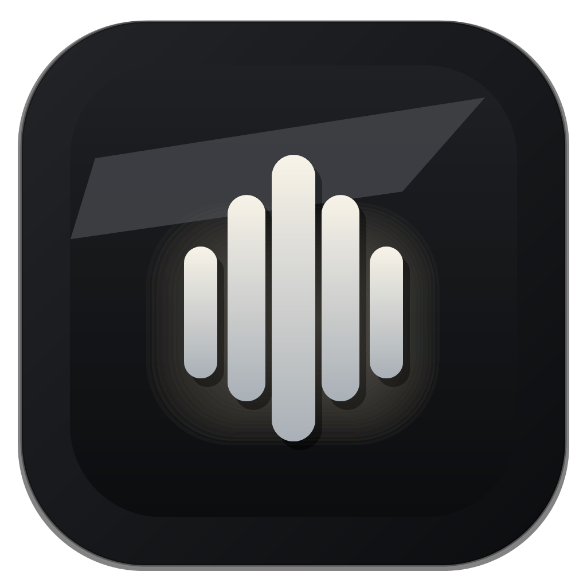
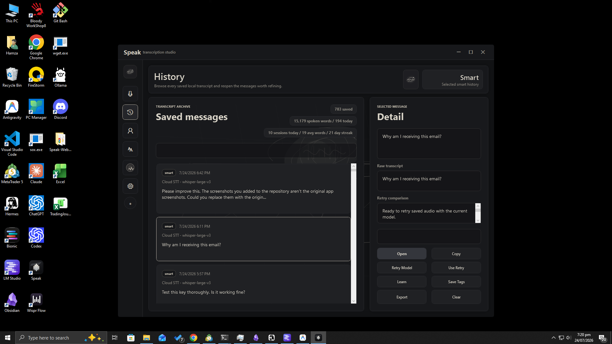
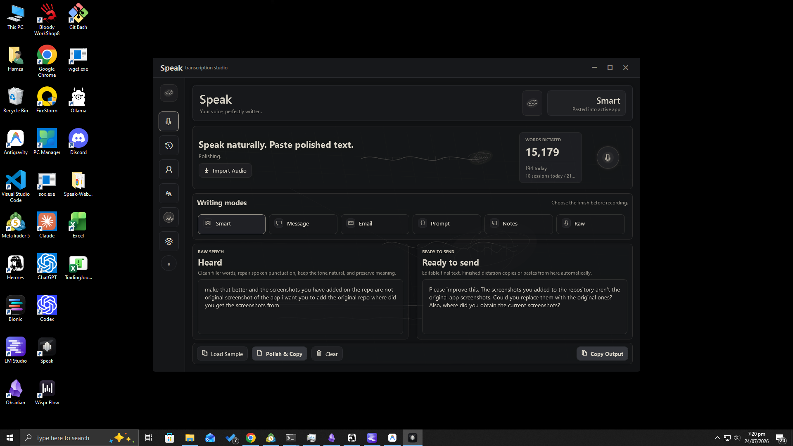
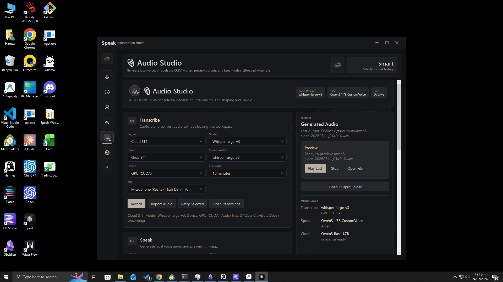
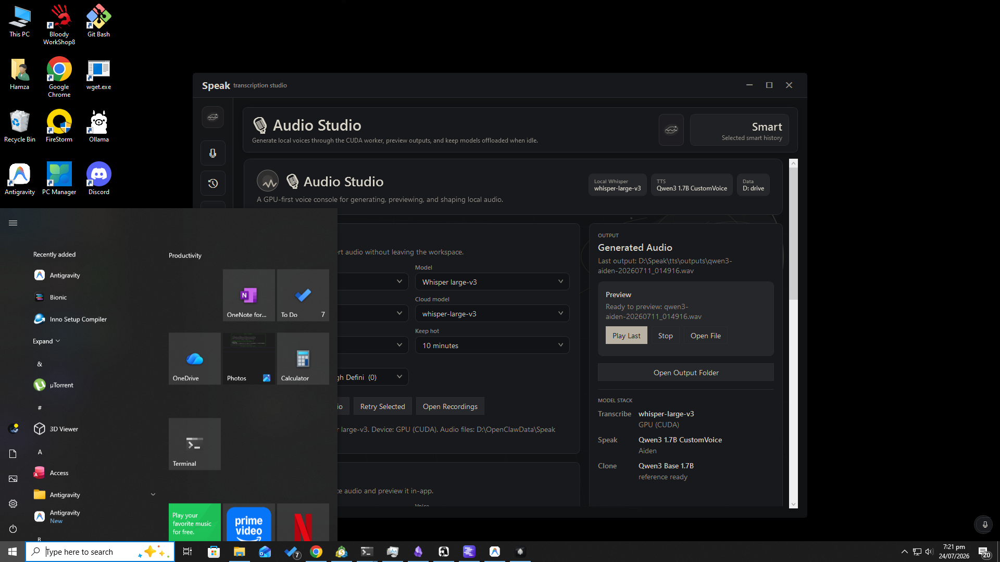
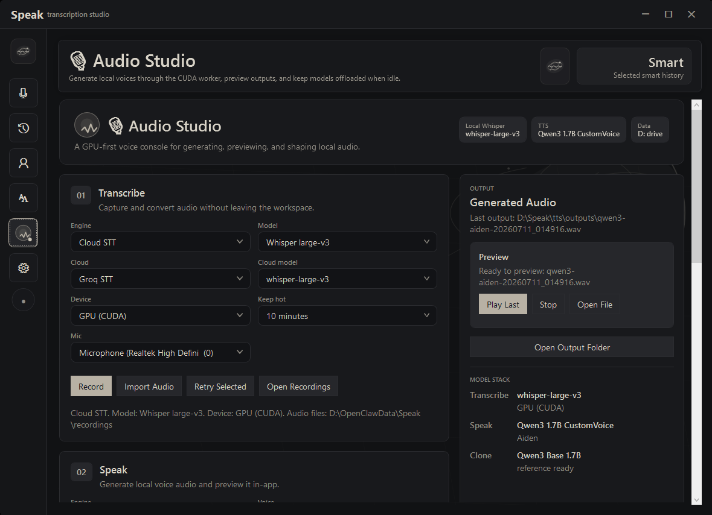

Press the shortcut
Start or stop dictation from anywhere in Windows with a configurable global hotkey.

SpeakPRIVATE · LOCAL-FIRST · WINDOWS
Speak turns your voice into useful writing in Outlook, ChatGPT, VS Code, browsers, and any other Windows application—without forcing your everyday dictation into an ad-funded cloud service.
Current release: v0.5.2 · Windows 10/11 x64 · Apache-2.0 Community edition

ONE SHORTCUT. THREE STEPS.
Start or stop dictation from anywhere in Windows with a configurable global hotkey.
Use local Whisper or deliberately configured cloud transcription. You choose the privacy boundary.
Clean up the transcript, apply your dictionary and corrections, then copy or paste it into the active app.
60-SECOND TOUR
Dictation, history, voice profile, personal dictionary, and local audio tools in one quiet desktop app.
Silent, captioned demonstration—no audio is required. Open the MP4 directly.




PRIVACY YOU CAN EXPLAIN
Local Whisper and local text-to-speech workers run on your computer. Optional cloud transcription and remote polishing send only the audio or text you deliberately submit to the provider you configure.
Speak does not configure advertising analytics. History, corrections, recordings, logs, and crash reports remain under Speak's local data directory unless you export or share them.
Read the exact privacy boundaries →SIMPLE, HONEST PRICING
The existing Community source stays Apache-2.0 licensed. The planned Pro offer pays for official convenience, guided setup, support, and future proprietary additions—not for taking away today’s open features.
COMMUNITY
$0
Free and open source
PLANNED · FIRST 100 USERS
FOUNDING PRO
$39
One-time founding price · planned public price $59
Interest registration only. Checkout is not live yet. Do not post private information in the public issue.
NEED HANDS-ON HELP?
$99–$149
Installation, local model paths, hotkey, microphone, and a verified first transcription.
$199
CUDA/runtime diagnosis, model selection, keep-alive tuning, and performance verification.
$500–$2,000
Private API integration, specialized vocabulary, deployment automation, or team workflow design.
Public interest form only. Do not include credentials, transcripts, private repository names, or personal contact details.
READY TO TRY IT?